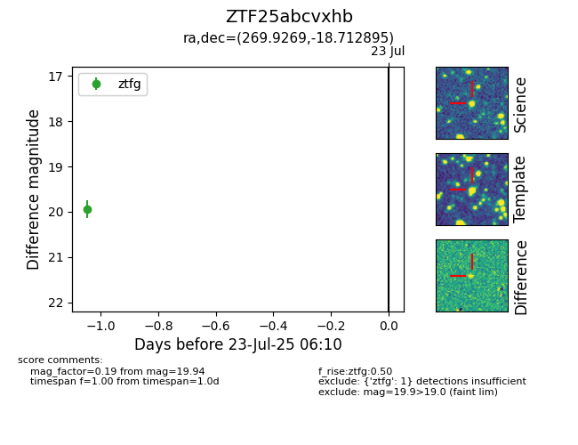

Target ZTF25abcvxhb at 2025-07-23 12:37, see:
FINK: fink-portal.org/ZTF25abcvxhb
Lasair: lasair-ztf.lsst.ac.uk/objects/ZTF25abcvxhb
ALeRCE: alerce.online/object/ZTF25abcvxhb
alt names
ZTF25abcvxhb (ztf,fink)
coordinates:
equatorial (ra, dec) = (269.9269,-18.71290)
galactic (l, b) = (10.4414,+2.42789)
photometry
last ztfg=19.94
1 ztfg detections
